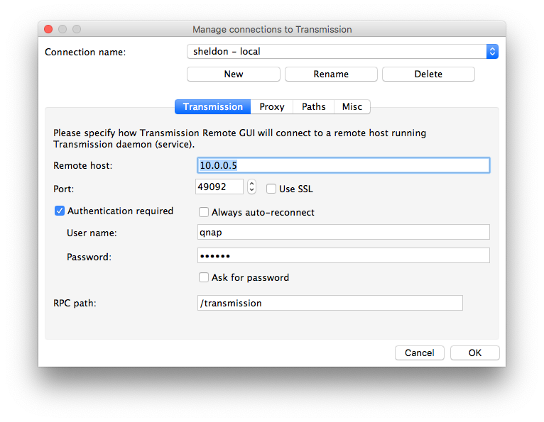
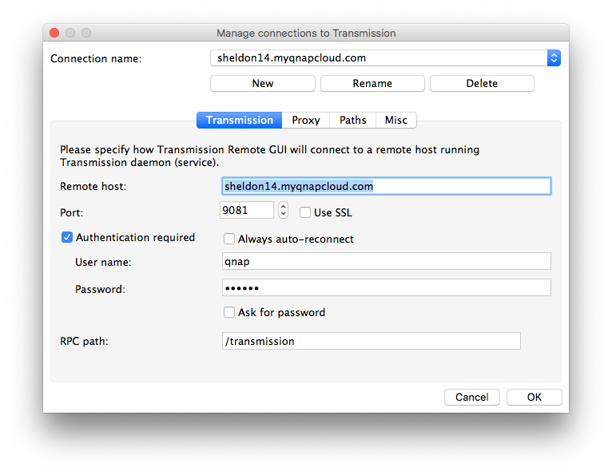
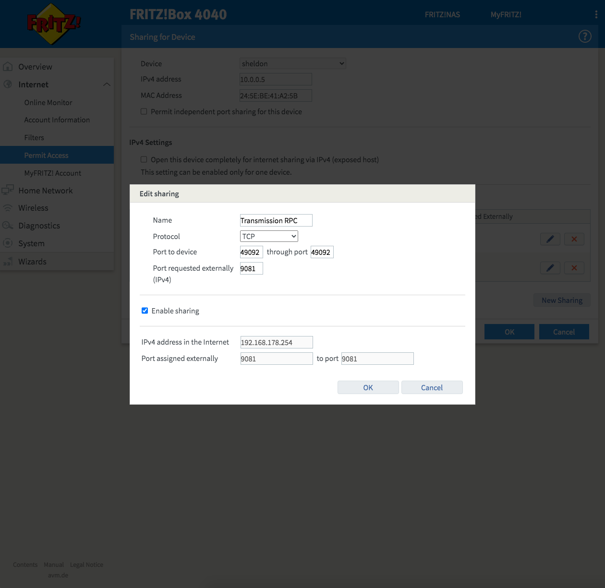

Transmission
Installazione
Il pacchetto da installare si scarica da qui: https://www.qnapclub.eu/en/qpkg/208 (se il link non funziona, fare una ricerca per "transmission" su quello stesso sito web).
La versione per Sheldon è TS-NASX86_64.
Il pacchetto va installato manualmente tramite App Center, e poi va configurato.
Configurazione
Il file da modificare è questo: /share/MD0_DATA/.qpkg/QTransmission3/etc/settings.json
Bisogna cambiare due cose fondamentalmente: rpc-username e rpc-password.
La password va scritta in chiaro tra virgolette e poi al riavvio del server viene crittata con qualche algoritmo, quindi la si ritroverà non leggibile.
Ho provato anche a modificare la rpc-port per fargli usare la stessa che usavo con Frink, ma in quel modo non funzionava più il link dall'icona che viene messa tra le applicazioni del NAS: il link infatti apre l'interfaccia web per forza sulla porta 49092, non importa quello che c'è scritto nel file di configurazione.
Interfaccia web
Di base Transmission per QNAP mette a disposizione un client web per gestire i download (ma non la configurazione, come si poteva fare una volta) ma è piuttosto basica. Si può installare un altro pacchetto, chiamato Transmission web control che è un po' meglio. Si accede poi a http://10.0.0.5:49092/transmission/web/
Transmission Remote GUI
https://github.com/transmission-remote-gui/transgui/releases
Collegamento dalla LAN

Accesso dall'esterno
Con Frink ero riuscito a configurare per accedere dall'esterno anche tramite Remote GUI, ma su Sheldon non ci sono riuscito e non valeva la pena sbattersi tanto. L'interfaccia web è comunque raggiungibile, credo sia più che sufficiente per le necessità minime.
Basta collegarsi a http://sheldon14.myqnapcloud.com:9081/transmission/web/ dopo aver impostato correttamente il port forwarding ovviamente.
Qualora si dovesse riuscire a cambiare le cose, queste sono le impostazioni per Remote GUI: 
Port forwarding
